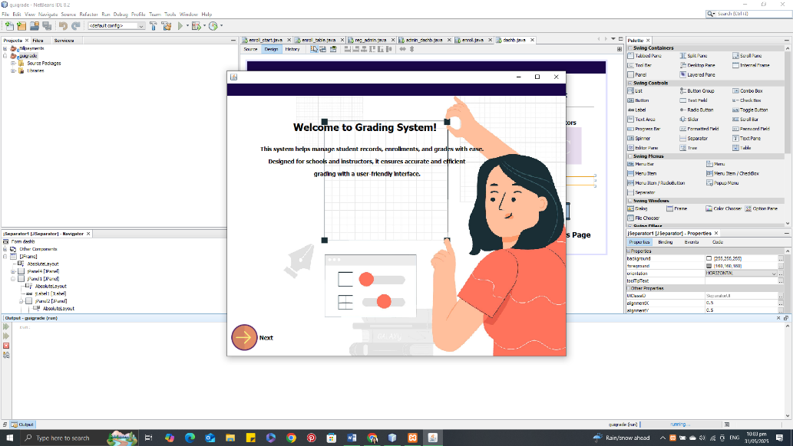
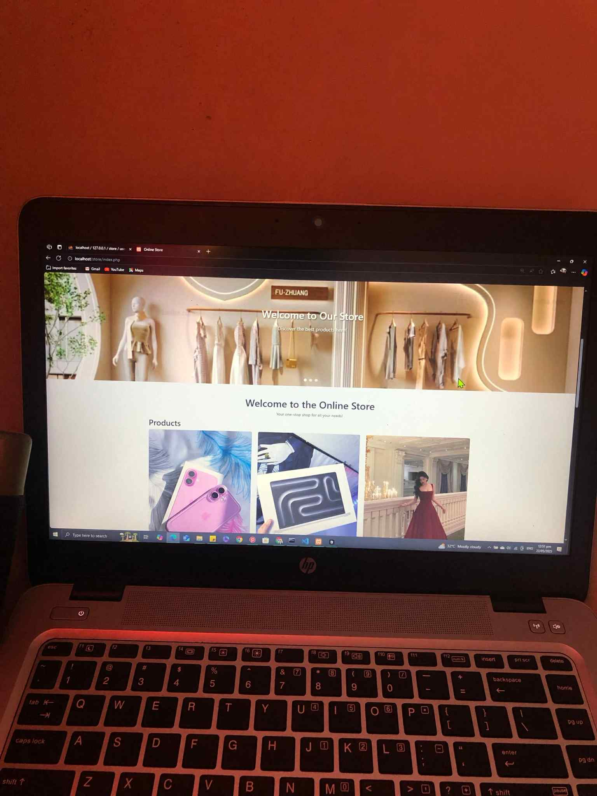

RECENT WORKS
This is the Grading Records System in my OOP1 & OOP2 project
-A Java-based application that manages student grades and academic records. It allows adding, updating, and viewing grades for different periods (Prelim, Midterm, Pre-Final, and Final) with an easy-to-use interface. The system supports student enrollment, course management, and generates reports for both overall class performance and individual students.
-This is a simple e-commerce website that allows users to browse products, add them to their cart, and proceed to checkout. It includes features like product listing, cart management, and order processing.